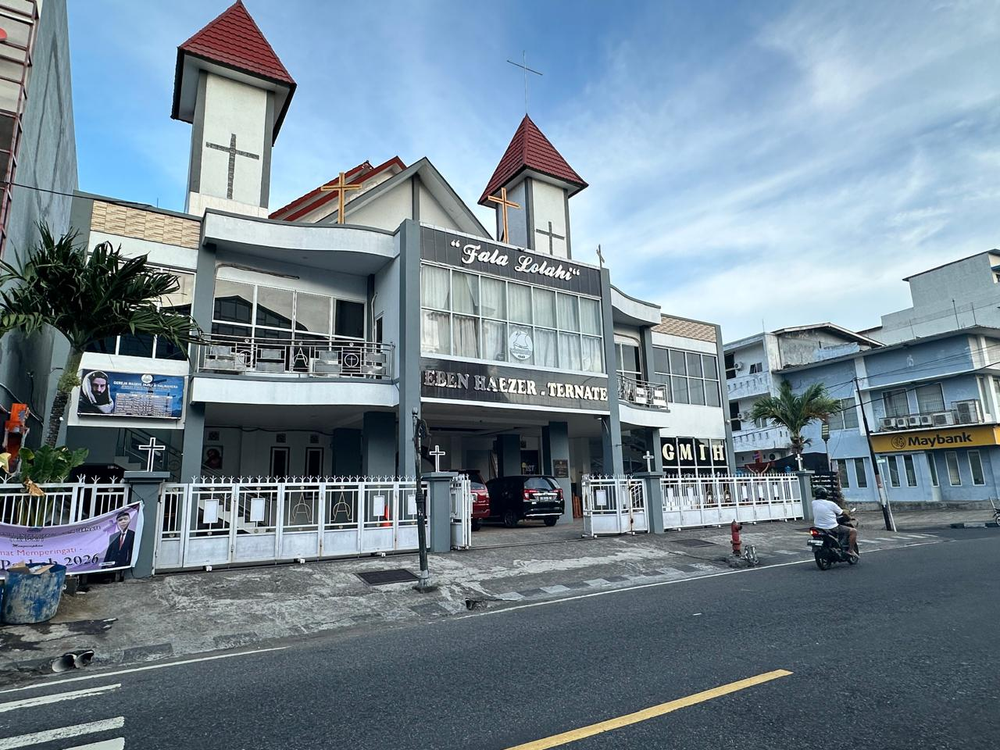
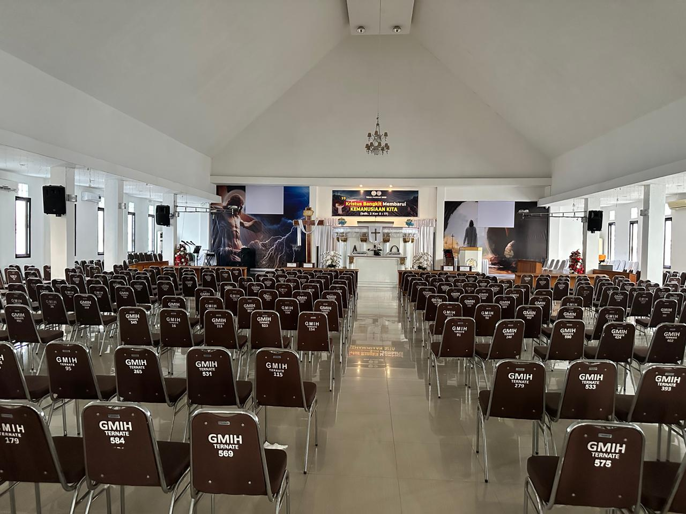
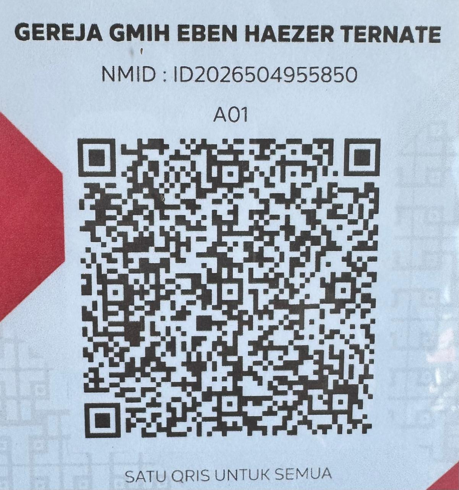

Ibadah & Persekutuan
Ruang untuk beribadah, mendengarkan firman, berdoa, dan membangun persekutuan sebagai keluarga Allah.
Bertumbuh dalam iman, bersekutu dalam kasih, dan melayani untuk menjadi berkat bagi sesama di Ternate dan Maluku Utara.

Rumah persekutuan, pertumbuhan iman, dan pelayanan jemaat.
GMIH Eben Haezer Ternate adalah salah satu jemaat Gereja Masehi Injili di Halmahera (GMIH) yang berada di Jl. Mononutu, Kelurahan Tanah Raja, Kecamatan Ternate Tengah, Kota Ternate, Maluku Utara.
Dalam kehidupan bergereja, jemaat hadir sebagai ruang persekutuan, pembinaan iman, pelayanan pastoral, pengembangan kategorial, serta kesaksian di tengah masyarakat.
Menjadi Gereja yang Utuh, Mandiri dan Misioner.
Pelayanan jemaat mencakup ibadah, pembinaan, kategorial, kepedulian sosial, pendidikan iman, serta kegiatan bersama.
Ruang untuk beribadah, mendengarkan firman, berdoa, dan membangun persekutuan sebagai keluarga Allah.
Pembinaan iman anak melalui ibadah, kreativitas, kegiatan kebersamaan, dan pelayanan pendidikan Kristen.
Ruang bagi generasi muda untuk bertumbuh dalam iman, relasi, kreativitas, dan pelayanan.
Pelayanan bagi warga jemaat dalam kehidupan sehari-hari, termasuk kunjungan, kedukaan, sakit, dan keluarga.
Pengembangan pelayanan kategorial untuk memperkuat peran setiap anggota jemaat dalam kehidupan gereja.
Menghidupi panggilan gereja untuk hadir, melayani, dan menjadi kesaksian kasih Kristus di tengah masyarakat.
Dokumentasi publik menunjukkan keterlibatan jemaat dalam berbagai kegiatan gerejawi, kepemudaan, anak, dan kegiatan GMIH.
Agenda mendatang untuk memperkuat koordinasi, pembinaan, dan arah pelayanan remaja.
Gereja Eben Haezer Ternate menjadi lokasi ibadah pelepasan kontingen Maluku Utara.
Beragam kegiatan untuk anak, remaja, pemuda, dan jemaat umum: seni, olahraga, musik, serta Cerdas Cermat Alkitab.
Pemuda GMIH Eben Haezer mengadakan malam perenungan menjelang perayaan kebangkitan Kristus.
Ketua BPHJ yang terdokumentasi dalam publikasi jemaat 2025–2026
Nama Pdt. Yofter N. Taliwunan tercantum dalam dokumen pelayanan jemaat dan dalam kegiatan gerejawi GMIH di Maluku Utara.
Beberapa dokumentasi yang Anda bagikan ditampilkan di sini sebagai bagian dari identitas visual website.

Gunakan QRIS pada materi yang diberikan untuk mendukung pelayanan. Pastikan detail penerima sesuai sebelum melakukan transaksi.

Jl. Mononutu, Kelurahan Tanah Raja, Kecamatan Ternate Tengah, Kota Ternate, Maluku Utara.
Buka di Google Maps →Kontak sekretariat untuk informasi umum dan kebutuhan pelayanan jemaat.
Hubungi sekretariat →Kontak pendeta yang dibagikan untuk kebutuhan komunikasi pelayanan.
Hubungi pendeta →